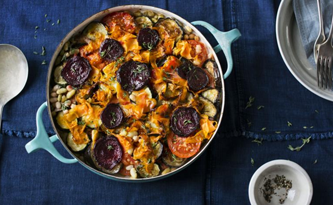

Ferbian Zakari
Professional Chef
This hearty vegetarian take on the traditional hotpot has a pretty topping that contains plenty of hidden treasures.
Each serving contains 436kcal, 10g protein, 32g carbohydrate (of which 18g sugars), 27g fat (of which 8g saturates), 14 fibre and 0.3g salt.
Tid i alt
Arbejds tid
Serves x
